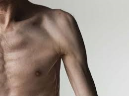

Pérdida de peso involuntaria: MedlinePlus enciclopedia médica
 Omita y vaya al Contenido Biblioteca Nacional de Medicina de los EE. UU. Menú Temas de salud Medicinas y suplementos Pruebas médicas Videos y multimedia Acerca de MedlinePlus Búsqueda Acerca de MedlinePlus Qué hay de nuevo Índice Contáctenos Temas de salud Medicinas y suplementos Pruebas médicas Videos y multimedia English Usted está aquí: Página Principal Enciclopedia médica Pérdida de peso involuntaria Dirección de esta página: //medlineplus.gov/spanish/ency/article/003107.htmPérdida de peso involuntaria
Es una disminución del peso corporal, cuando no se está buscando bajar de peso.
Muchas personas aumentan o suben de peso. La pérdida de peso involuntaria es la pérdida de 10 libras (4.5 kilogramos) O el 5% de su peso corporal normal durante 6 a 12 meses o menos sin conocer la razón.
Causas
Una pérdida de apetito puede ser causada por:
Sensación de depresión Cáncer, incluso cuando no hay otros síntomas Infecciones crónicas como SIDA Enfermedades crónicas como EPOC o enfermedad de Parkinson Fármacos, incluso los usados en la quimioterapia, o medicamentos antitiroideos Consumo de drogas ilícitas como las anfetaminas y la cocaína Estrés o ansiedadProblemas crónicos del sistema digestivo que disminuyen lВокруг нас множество чудодейственных диет и совсем мало здравого смысла. Голос в вашей голове нашептывает вам, что диета, состоящая только из йогуртов и фруктов… пожалуй, не лучший вариант. Он также подсказывает вам, что лучший способ избавиться от лишнего веса – это сжигать больше калорий, чем вы потребляете. Всё, что он подсказывает - правда! И для этого надо немножко больше двигаться И немножко больше следить за своим питанием. Только немножко, обещаем! Наша задача – не навредить себе, а обрести хорошие привычки… и терпение. Перед вами – бесконечный список простых вещей, которые нужно делать, чтобы больше не задаваться вопросом о том, как быстро сбросить вес в домашних условиях. Следите за питанием 1. Сбалансированная диета Поможет ли спорт похудеть, если вы питаетесь неправильно? Вы усердно трудитесь, сжигая калории в спортзале, но это не избавляет вас от неправильной диеты. Вот несколько простых советов. Попробуйте заменить простые углеводы сложными. Сложные углеводы, такие как злаки, коричневый рис, картофель, орехи, содержат много клетчатки, благодаря чему даже в малых порциях они надолго избавляют от чувства голода. Не заблуждайтесь: потребление жира не делает вас жирным. На самом деле, жир – необходимая часть рациона. Помните, что белок жизненно важен. Сосредоточьтесь на трех элементах - углеводы (сложные), белки и жиры. Они все должны быть в рационе. Готовьте на сливочном или кокосовом масле. 2. Ритм диеты Главное правило – не пропускать приемы пищи! Ешьте четыре раза в день: утром, в полдень, около 4 вечера и 8 вечера. Это приучит ваш организм к определенному ритму питания. Если вы хотите сбросить несколько килограммов, тренеры по фитнесу обычно рекомендуют есть определенные виды пищи в разное время суток. 3. Энергия с утра, легкие блюда вечером Что же нужно есть, чтобы похудеть? С утра - ржаной хлеб, злаковые хлопья (не слишком сладкие, например, мюсли или отруби), киви или грейпфрут, йогурт 0%... Завтрак должен заряжать энергией! На обед ешьте сложные углеводы – например, цельнозерновую пасту, рис, киноа или булгур. К ним отлично подойдет белое мясо или рыба. В 16 часов – небольшой перекус: кусочек хлеба + фрукт. После 17 часов есть углеводы не рекомендуется. На ужин можно приготовить рыбу, омлет или овощной суп. Перед тренировкой никогда не помешает маленький протеиновый батончик. Не забудьте также брать с собой минеральную воду или спортивный напиток – они помогут вам справиться с нагрузкой. Для получения более персональных советов по питанию проконсультируйтесь с диетологом. tos Inflamación crónica o infección del páncreas Extracción de alguna parte del intestino delgado Uso excesivo de laxantes
Otras causas como:
Trastornos alimentarios, como anorexia nerviosa que no se ha diagnosticado Diabetes que no se ha diagnosticado Glándula tiroides hiperactivaCuidados en el hogar
Su proveedor de atención médica puede sugerirle cambios en su dieta y un programa de ejercicio dependiendo de la causa de la pérdida de peso.
Cuándo contactar a un profesional médico
Llame a su proveedor si:
Usted o un familiar suyo pierde más peso de lo que se considera normal para su edad y altura. Ha perdido más de 10 libras (4.5 kilogramos) O del 5% del peso corporal normal en 6 a 12 meses o menos, y no hay una explicación. Se han presentado otros síntomas además de la pérdida de peso.Lo que se puede esperar en el consultorio médico
El proveedor llevará a cabo un examen físico y revisará su peso. Le hará preguntas acerca de sus antecedentes médicos y los síntomas, como:
¿Cuánto peso ha perdido? ¿Cuándo comenzó la pérdida de peso? ¿Se ha presentado pérdida de peso de manera repentina o lenta? ¿Está comiendo menos? ¿Está comiendo alimentos diferentes? ¿Está haciendo más ejercicio? ¿Ha estado enfermo? ¿Tiene problemas dentales o úlceras bucales? ¿Tiene más estrés o ansiedad de lo usual? ¿Ha vomitado? ¿Usted mismo se provoca el vómito? ¿Presenta desmayos ? ¿Presenta ocasionalmente hambre incontrolable con palpitaciones , temblores y sudoración ? ¿Ha tenido estreñimiento o diarrea? ¿Presenta incremento de la sed o está tomando más líquidos? ¿Está orinando más de lo usual? ¿Ha perdido algo de cabello? ¿Qué medicamentos está tomando? ¿Se siente triste o sufre de depresión? ¿Está complacido o preocupado con la pérdida de peso?Es posible que necesite ver a un nutricionista para recibir asesoramiento nutricional.
Nombres alternativos
Pérdida de peso; Bajar de peso sin proponérselo; Pérdida de peso inexplicable
Referencias
Bistrian BR. Nutritional assessment. In: Goldman L, Schafer AI, eds. Goldman-Cecil Medicine . 25th ed. Philadelphia, PA: Elsevier Saunders; 2016:chap 214.
McQuaid KR. Approach to the patient with gastrointestinal disease. In: Goldman L, Schafer AI, eds. Goldman-Cecil Medicine . 25th ed. Philadelphia, PA: Elsevier Saunders; 2016:chap 132.
Seller RH, Symons AB. Weight gain and weight loss. In: Seller RH, Symons AB, eds. Differential Diagnosis of Common Complaints . 7th ed. Philadelphia, PA: Elsevier; 2018:chap 36.
Ultima revisión 1/19/2019
Versión en inglés revisada por: David C. Dugdale, III, MD, Professor of Medicine, Division of General Medicine, Department of Medicine, University of Washington School of Medicine. Also reviewed by David Zieve, MD, MHA, Medical Director, Brenda Conaway, Editorial Director, and the A.D.A.M. Editorial team.
Traducción y localización realizada por: DrTango, Inc.
Peso corporal Siga leyendo Revista NIH MedlinePlus Salud Siga leyendo Temas de salud A-Z Siga leyendoA.D.A.M., Inc. está acreditada por la URAC , también conocido como American Accreditation HealthCare Commission (www.urac.org). La acreditación de la URAC es un comité auditor independiente para verificar que A.D.A.M. cumple los rigurosos estándares de calidad e integridad. A.D.A.M. es una de las primeras empresas en alcanzar esta tan importante distinción en servicios de salud en la red. Conozca más sobre la politica editorial , el proceso editorial y la poliza de privacidad de A.D.A.M. A.D.A.M. es también uno de los miembros fundadores de la Junta Ética de Salud en Internet ( Health Internet Ethics , o Hi-Ethics ) y cumple con los principios de la Fundación de Salud en la Red ( Health on the Net Foundation : www.hon.ch).
La información aquí contenida no debe utilizarse durante ninguna emergencia médica, ni para el diagnóstico o tratamiento de alguna condición médica. Debe consultarse a un médico con licencia para el diagnóstico y tratamiento de todas y cada una de las condiciones médicas. En caso de una emergencia médica, llame al 911. Los enlaces a otros sitios se proporcionan sólo con fines de información, no significa que se les apruebe. © 1997-2021 A.D.A.M., Inc. La duplicación para uso comercial debe ser autorizada por escrito por ADAM Health Solutions.
Acerca de MedlinePlus Qué hay de nuevo Índice Contáctenos Reciba alertas RSS Síganos en Kit para redes sociales Exenciones Derechos de autor Política de privacidad Accesibilidad Pautas para enlaces Visores y reproductores U.S. National Library of Medicine 8600 Rockville Pike, Bethesda, MD 20894 U.S. Department of Health and Human Services National Institutes of Health Página actualizada 08 febrero 2021